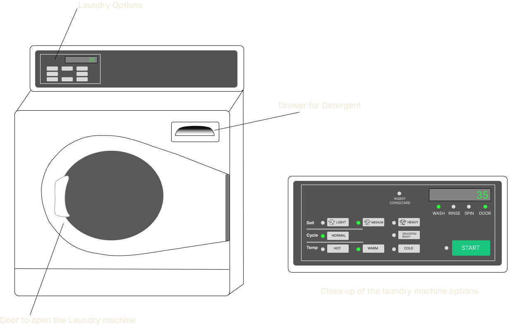
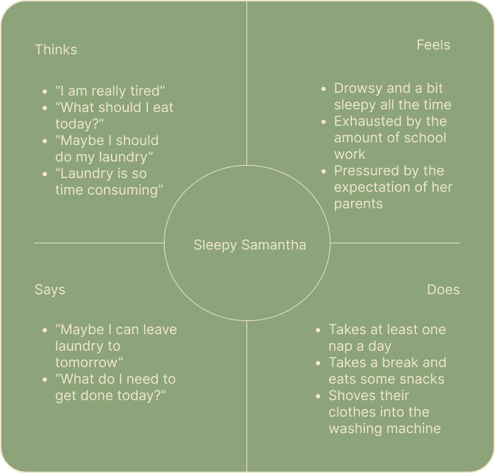
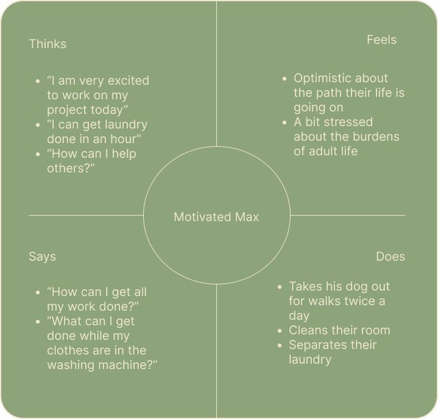
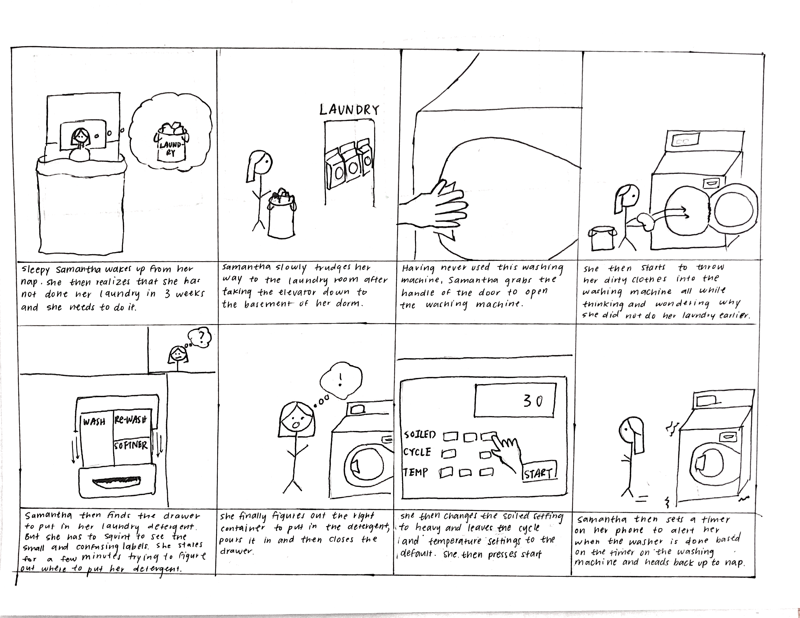
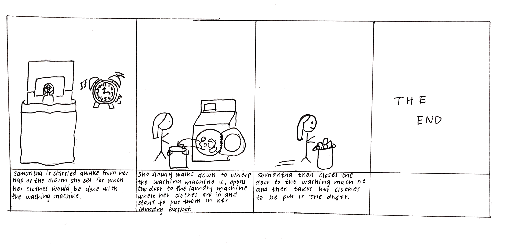

This project involved finding a public interface and seeing how users interact with it.
Then 2 user personas and a storyboard were constructed from those observations.

The interface that was chosen for this project was a washing machine which allows users to wash their clothes and select the options
they want to use for this particular load of laundry.
This washing machine has a standard door which opens into a chamber where clothes can be put into.
On the top right hand corner of the machine, there is a drawer to put in detergent and at the top of
the machine there is a panel with different types of wash options for this load of laundry that the user
can choose.
User 1 is a college student that has
never used this particular laundry machine before.
They were motivated to use this laundry machine because it was free. User 1 very easily finds the door
to the washing machine and opens it and starts to shove in their laundry. They also easily find the drawer
to put the laundry detergent into. However, they seem a bit confused about which container in the drawers
to actually put the laundry detergent. They struggle for a few minutes and eventually find the right container.
User 1 then looks at the options the washing machine has and takes a few minutes to pick out the one they want
and press start.
User 2 is a college student that has
never used this particular laundry machine before. User 2
quickly opens the washing machine door and throws in their laundry. They then throw a laundry pod into the washing
machine chamber. They then select an option from the options panel and press start.
User 3 is a college student that has
used this particular laundry machine before. User 3 finds a washer with the door already open.
They then flip over all their clothes, sorts them, and then puts it into the washer. User 3 finds the detergent drawer easily but seems to be confused
where to put the laundry detergent in. In the end, they choose a random container to put their detergent in,
choose their laundry options quickly and press start.
- Have you used this washing machine before?
- How did the design of this interface impact your use of it?
- How intuitive was the washing machine?
- Was there anything confusing/difficult about the washing machine?
- What do you think about the labels for the options that the washing machine had?
- Is there anything that would improve your experience?
- The users generally agreed that this washing machine was well designed. For example
the handle for the door allowed the user to know that it could be pulled and that it opened into
chamber where they put the clothes. There are also minimal distractions on the interface which helped in finding
the laundry tray which also had a handle, indicating to users that it could be pulled out.
-
The users also noted that the labels for each of the laundry options on the
laundry panel were very clear.
For example, the temperature
settings were conveyed in common terms such as "warm", "hot", or "cold" instead of acutal temperatures like 30 degrees
farenheit. The soiled option also provided a picture next to each option so users could figure the appropriate
settings based on the state of their clothes.
-
A difficulty observed by both User 1 and User 3 was
where to put the laundry detergent in the detergent
drawer. User 3 mentioned that the different containers were all labeled "WASH"
which were not very helpful in
finding where to put the detergent. User 1 also mentioned that the text that was labeling the container were in small white raised
text, which was the same color as the containers, and made it hard to see.

Sleepy Samantha is a college student in her junior year studying CS;
she often likes to snack on a variety of foods and spends most of
her time doing homework in her room.
-
Samantha thinks that the drawer for the detergent
does not have a properly labeled section to actually
put in the detergent which made it hard for her to
figure out where to pour detergent.
-
Sleepy Samantha most closely resembles User 1 and
User 2 in personality and in lifestyle. Both User 1 and User
2 have never used this washing machine before

Motivated Max is a newly graduated student
working as a civil servant;
he really wants to help
improve the lives of other people and likes to go
on hikes with his dog.
-
Motivated Max thinks that some of the options
for the washing machine are a bit confusing
and could be hard for first time users. For example he thinks
that the options for the soiled were a bit confusing becuase that
term is not very commonly used.
-
Motivated Max mostly resembles User 3 in
lifestyle and User 2 in personality.
User 3 has used the washing machine before.
This is a storyboard for Sleepy Samantha


Overall this project taught me how to build personas based on observations and how to create a
storyboard for the interactions between the user and the interface. I also learned what is
important to look for when observing users and how to create good interview questions.